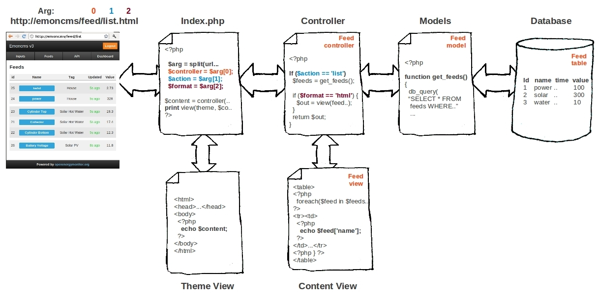

Old Application architecture - kept here for reference
The new emoncms documentation location is here http://emoncms.org/
Emoncms follows the commonly used Model-View-Controller (MVC) architecture, which provides a clear way of separating the functions of the application in to different parts.
At the heart of the application is the database, which stores the application data, such as user information and feeds data. Everything else is there to essentially be the bridge between the user and the database. Providing the user with the data requested in the requested format from a http web accessible API.
The following diagram shows the distinct stages in this process and the flow of data between them using the example of creating a list of a users feeds:
Application flow diagram

Whats going on here?
1) index.php
As in the diagram above everything is directed through index.php, this is achieved using mod_rewrite
The purpose of mod_rewrite is to convert
emoncms/user/login
to:
emoncms/index.php?q=user/login
index.php then fetches the property q with $_GET['q'] and builds the page accordingly.
Anther name for index.php it is the main controller. The controller that decides which sub-controllers are to be called and can put the result of many controllers together. When the themed HTML format is requested it wraps the output of the sub-controllers (including sub-views) in the main application theme.
1) The models
The model translates the mysql database API into a php methods which define the internal API of the application. The internal API can be seen an includable software library that makes the main application scripting a bit neater.
With database requests such as the following:
$feed_result = db_query("SELECT * FROM feeds WHERE id = '$feedid'");
$feed_row = db_fetch_array($feed_result);
if ($feed_row['status'] != 1) { // if feed is not deleted
$feed = array($feed_row['id'],$feed_row['name'],$feed_row['tag'],$feed_row['time'],$feed_row['value']);
}
Being turned into nice one-line commands like this:
$feed = get_feed($feedid);
2) The controllers
The controllers are the bridge between the internal php API and the external HTTP API.
Converting a request such as:
http://yoursite/emoncms3/feed/list.html
into:
$feeds = get_user_feeds($userid);
and returning the output in the required format. The controllers also handle access privileges and input validation, which are discussed here on the
security page.
A typical controller action might look like this: (the following action is within the function feed_controller() )
if ($action == 'list' && $_SESSION['read'])
{
$feeds = get_user_feeds($_SESSION['userid']);
if ($format == 'json') $output = json_encode($feeds);
if ($format == 'html') $output = view("feed/list_view.php", array('feeds' => $feeds));
}
Access privileges
The line $_SESSION['read'] determines the access privileges of the controller action. In this case the user must have at least read access privileges, which can be granted with a read access apikey. $_SESSION['write'] would require the user to have write access privileges. No $_SESSION read or write check would make the action public.
Format control
The output can currently be themed as a nice HTML page for viewing in a browser or as a JSON string for use in 3rd party applications, AJAX requests or datalogging equipment.
The format is set by adding a .html or .json to the end of the HTTP API. If no format is given it will assume that the format desired is a themed html page.
JSON format output: emoncms/feed/list.json
HTML themed output: emoncms/feed/list.html
For most controller actions you will see the following format control lines:
if ($format == 'json') $output = json_encode($feeds);
if ($format == 'html') $output = view("feed/list_view.php", array('feeds' => $feeds));
For the json option the output is just json encoded and then returned.
For the html option the output is passed to a view which handles the wrapping in a themed html output. The output of the view is passed back to the controller for returning to the main controller: index.php
3) Views
The views wrap the variables and objects passed from the controllers in a presentation layer, such as html and css. A simple view outputting a table with a list of feeds might look like this:
<table>
<?php foreach ($feeds as $feed) { ?>
<tr>
<td><?php echo $feed['name']; ?></td>
<td><?php echo $feed['value']; ?></td>
</tr>
<?php } ?>
</table>